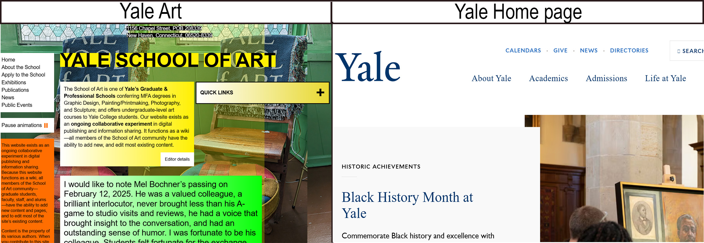

The Yale Art Department uses multiple fonts and not all are user friendly. In contrast the homepage of Yale University has a more professional appearance due to the minimal use of different fonts and colors.
I chose these two sites because a business will normally have a brading guide. However this does not appear the Art school uses that branding guide.
Disclosure: This is not a real website.